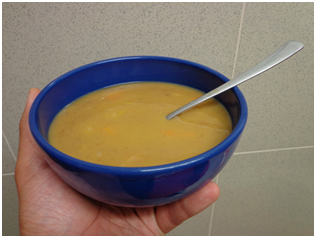

Chãos promove quinto Encontro das Sopas
Gastronomia e cultura popular são os atrativos da festa marcada para a localidade do concelho do Fundão.
A localidade dos Chãos, no concelho do Fundão, promove domingo, dia 18, a quinta edição do “Encontro das Sopas e Produtos Típicos Locais”. Nesta edição, destaque para a animação de rua, tasquinhas, gastronomia e artesanato.
A abertura é às 13h00, com uma exposição de trabalhos realizados pelas crianças do Centro Paroquial de Assistências das Donas, Centro Paroquial de Valverde, Colégio Nossa Senhora de Fátima – Aldeia Nova do Cabo e Jardim de Infância Porta Aberta – Fundão.
Ao longo da tarde, atuam os grupos de Bombos das Donas e do Fundão, Fanfarra dos Escuteiros de Valverde, Grupo de Cantares da Senhora do Mosteiro – Freixial e Associação Recreativa e Cultural do Rancho “Os Pastores do Açor”. O certame encerra com a atuação musical de Luís Gonçalves.
Um evento organizado pela Junta de Freguesia da União de Freguesias do Fundão, Valverde, Donas, Aldeia de Joanes e Aldeia Nova do Cabo, do Grupo Convívio e Amizade nas Donas e do Município do Fundão.
“Esta iniciativa tem com principal objetivo dinamizar a localidade dos Chãos, através da promoção e divulgação dos diversos produtos locais, da recuperação da gastronomia local e dos produtos hortícolas”, explica a organização.
publicado em: quarta-feira, 14 de Maio de 2014